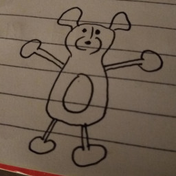

Letero de la prezidanto
Saluton, mi estas la nova prezidanto, post bedaŭrinde malgranda jarkunsido. Kvankam mi intencas aktive plenumi la rolon, mi ne tute volis ĝin. Mi ne estas natura estro, kaj mi ne multe ŝatas fari decidojn.
Kelkaj aferoj estas evidente farendaj. Ili samas la farendaĵojn de la lastaj jaroj, sed ĉar ni ne faris ilin, ili restas! Nia klubo estas ne multe aktiva, kaj ankaŭ ni unuope ne estas multe aktivaj. Ni multe bezonas havi pli da anoj, kaj ni bezonas esti tia ke uloj volu aniĝi.
Parto de la tasko estas trovi la aliajn londonajn esperantistojn (se ili ekzistas), kaj trovi tion kion ili volas de klubo. Sed la granda parto estas ke ni bezonas novulojn. Nia klubo estas nun preskaŭ nevidebla, kaj nia lingvo ankaŭ - ni devas ŝanĝi tion.
Mi jam komencis pri mia unua plano, kio estas pri la bulteno. Mi intencas ke ekde nun ĝi estu presita kaj disdonita al … nu, tio restas demando. Mi petis ĉe kelkaj bibliotekoj, kaj ili ŝajnas akceptemaj, sed tio estas malmultaj lokoj ankoraŭ.
Ekde ĉi tiu numero, la bulteno havos iom da teksto pri Esperanto en la angla. Tiel, ĝi estos alirebla al novuloj kaj donos ideon pri kiel komenci. Ĝi enhavos ligilon al retejo, kiun mi kreis por enkonduki kiel eble plej rapide Esperanton, kaj tio direktos poste al nia klubo, kaj al la kursoj kiujn ofertas ni.
Sed por ke tio kaptu atenton, ni bezonas esti alloga. La bulteno, kaj ankaŭ nia retejo, (kaj ĝenerale ni,) devas esti aktivaj kaj freŝaj, tiel ke oni sciu ke ni vere faras ion, kaj ke Esperanto ne estas nur teoria ideo aŭ projekto.
Pri tio, mi petas helpon. Mi ŝatus ke vi ĉiuj volu partopreni tion. Kiel ni povas inspiri al ne-esperantistoj? Mi ne scias kial ĉiu el vi individue esperantistiĝis, sed mi supozas ke estas io en ni ĉiuj kio vere volas ke Esperanto disvastiĝu, ĉar ni havas deziron ke homoj vivu pli bone kaj pli kune. Nun estas bona tempo por provi. Mi esperas ke ni povas fari ion al tiu celo.
Ĝis baldaŭ, Phil Housley